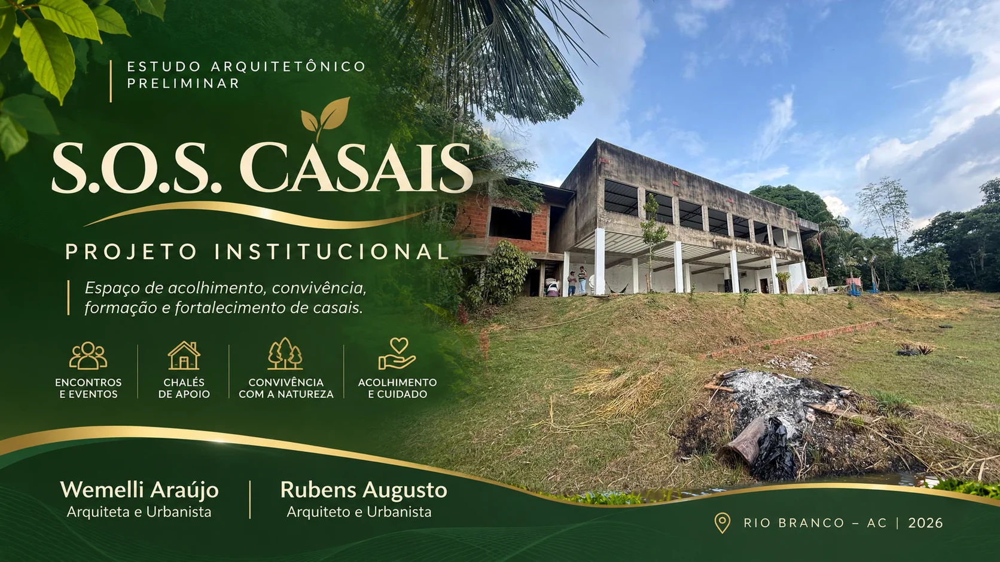
Um lugar para encontros,
contemplação e convivência.
A proposta combina atividades institucionais, encontros para casais e pequenas experiências de permanência em meio à paisagem existente. A natureza é o elemento estruturador do estudo, não apenas o cenário.
Recepção, convivência e espaços de apoio.
Salão para encontros, celebrações e atividades institucionais.
Caminhos, lâmina d’água, decks e áreas de descanso.
Chalés compactos e choupanas integrados à mata.
O território e seus acessos
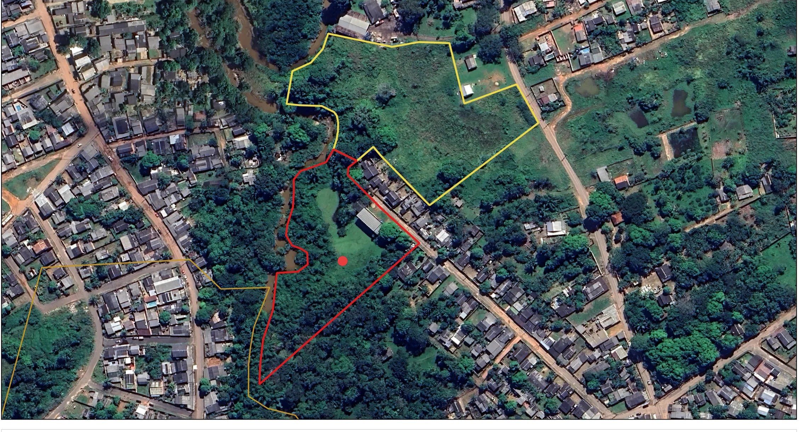
Duas áreas em articulação
O conjunto parte de uma edificação existente com dois pavimentos em desnível e considera o terreno complementar adquirido pelo cliente, com possibilidade de ligação viária e novo acesso.
- A Poligonal vermelha: área da edificação principal e implantação de convivência.
- B Poligonal amarela: terreno complementar e estudo de acesso.
- C Linha ocre: limite cadastral de referência; poligonais e limites sujeitos à conferência documental e topográfica.
Organização preliminar do terreno
Documento de implantação utilizado como base de apresentação, ainda sujeito a revisão de geometria, quantitativos e viabilidade técnica.
Números do estudo base
Área identificada na prancha de estudo.
Quantitativo desenhado, a revisar.
Distribuição preliminar da implantação.
Quantidade do documento atual, não definitiva.
Mobilidade suave e água como eixo de contemplação.
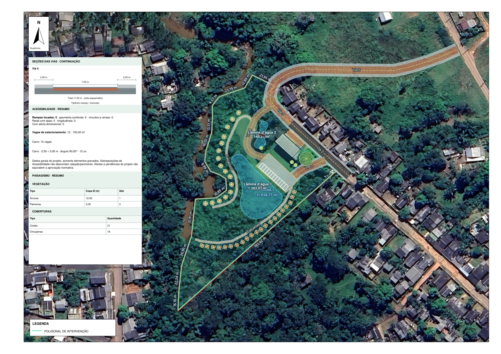
A implantação prevê acessos, caminhamentos, áreas de apoio e relação com a topografia existente.
Duas lâminas d’água somam 1.408,34 m² no estudo base; extensão e cotas dependem de validação posterior.
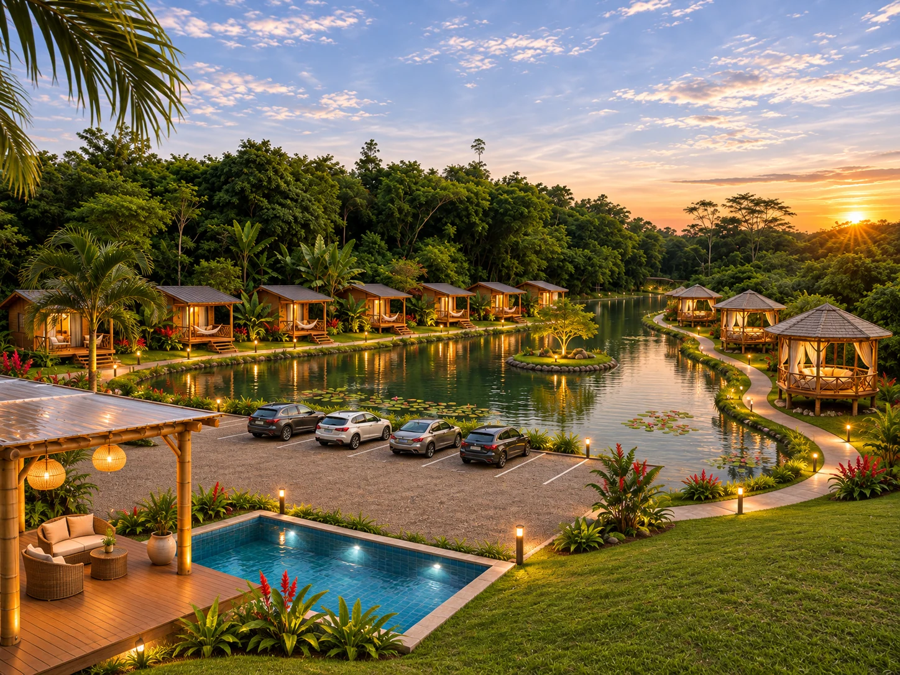
Paisagem que
convida a ficar.
Proposta visual de integração entre chalés, cabanas abertas, estacionamento, piscina em cota inferior, deck com cobertura em bambu e policarbonato, e lâmina d'água prolongada pelo terreno.
Imagem conceitual · proporções ilustrativasUma chegada
mais acolhedora.
A fachada recebe vegetação vertical, iluminação de arandelas, porta em madeira e sinalização institucional discreta, preservando a linguagem natural do conjunto.
- 01 Muro vivo e valorização paisagística.
- 02 Estacionamento em tijolinho maciço, acessos e sinalização.
- 03 Identificação S.O.S. Casais junto à entrada.
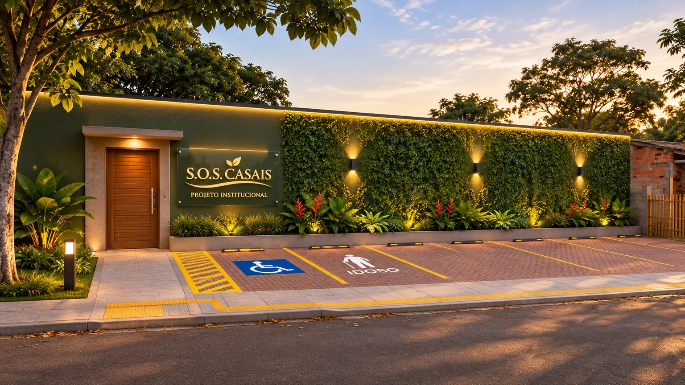
Receber com
leveza.
Balcão lateral de atendimento sem obstruir a entrada, espaço de espera compacto, integração com plantas em verde-oliva e separação envidraçada para o salão.
- Porta principal em madeira moderna.
- Forro de gesso com sanca e luz quente.
- Circulação de entrada preservada.
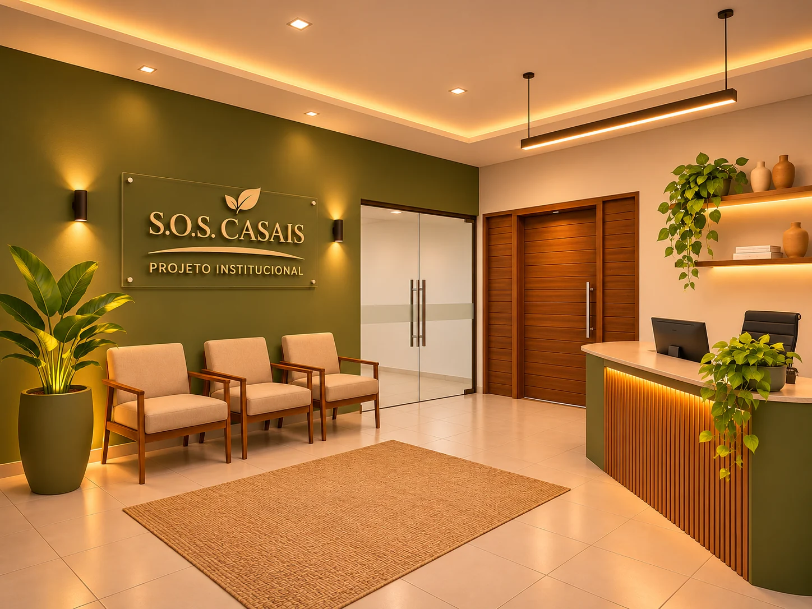
Um salão para
compartilhar.
Dois blocos de cadeiras plásticas brancas, corredor central, palco elevado de ponta a ponta e uma composição de bambu iluminado.
- Porta discreta à direita do palco, para área de serviço e camarim.
- Janelas de quatro folhas, conforme vãos existentes.
- Forro de gesso, sanca lateral e iluminação embutida.
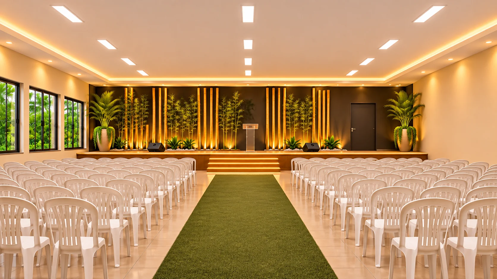
Café e
convivência.
Cafeteria compacta e simples, instalada no box existente à esquerda. Mesas leves, portas dos sanitários em verde-escuro, forro de gesso liso e revestimento de piso amadeirado.
- Balção recuado, rente ao fechamento existente.
- Divisória móvel com estrutura metálica, bambu e vegetação.
- Sanitários feminino e masculino com acessos preservados.
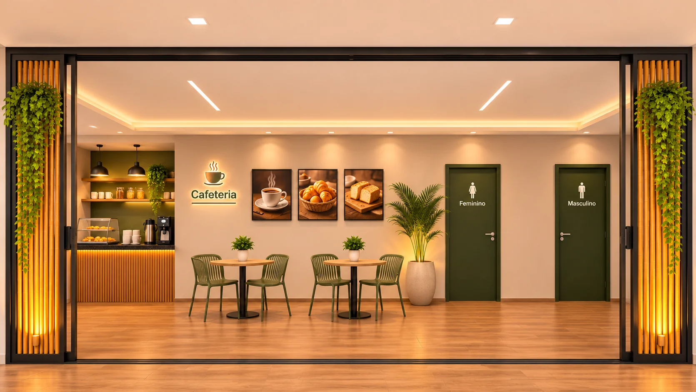
O pavimento
do encontro.
Espaço inferior vinculado ao talude, com apoio para café da manhã, serviço e mesas distribuídas. A parede contínua recebe proposta de acabamento pétreo delgado e peças decorativas em fibras naturais.
- Forro de gesso e iluminação equilibrada à luz do dia.
- Porta da cozinha mantida no lado direito.
- Materiais sujeitos à avaliação da umidade e do desempenho técnico.
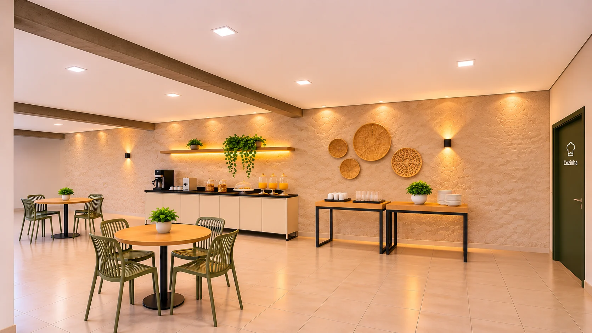
Chalé compacto
Quarto de 2,60 × 2,60 m livres, cama de casal de 1,38 × 1,88 m e banheiro posterior proposto de 2,60 × 1,20 m. Varanda de 2,90 × 1,20 m, com rede. Acessos frontal e lateral direito. Paredes consideradas: 15 cm.
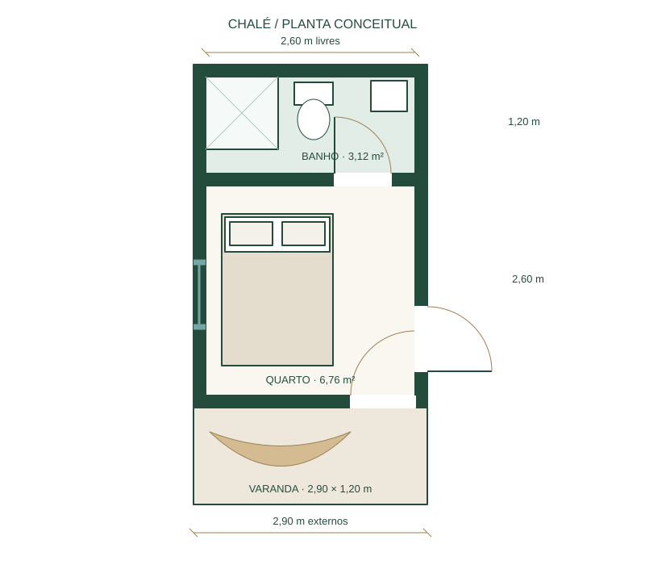
Abrigo e acolhimento
Cobertura em duas águas, varanda protegida e acabamento amadeirado. O volume preserva a escala compacta do quarto e reúne o banheiro nos fundos. Pé-direito ilustrativo de 2,50 m.
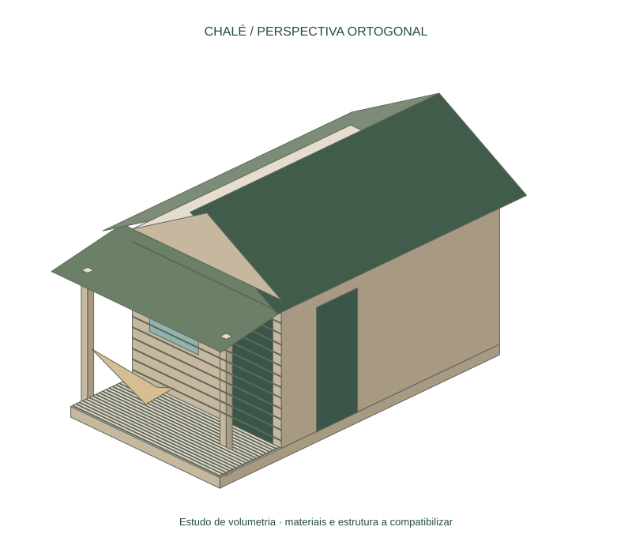
Choupana elevada
Plataforma octogonal proposta com 3,20 m entre faces paralelas e área aproximada de 8,48 m². Namoradeira para duas pessoas e piso elevado 0,50 m. Degraus ilustram o acesso; a rota acessível deve ser integrada ao terreno na próxima etapa.
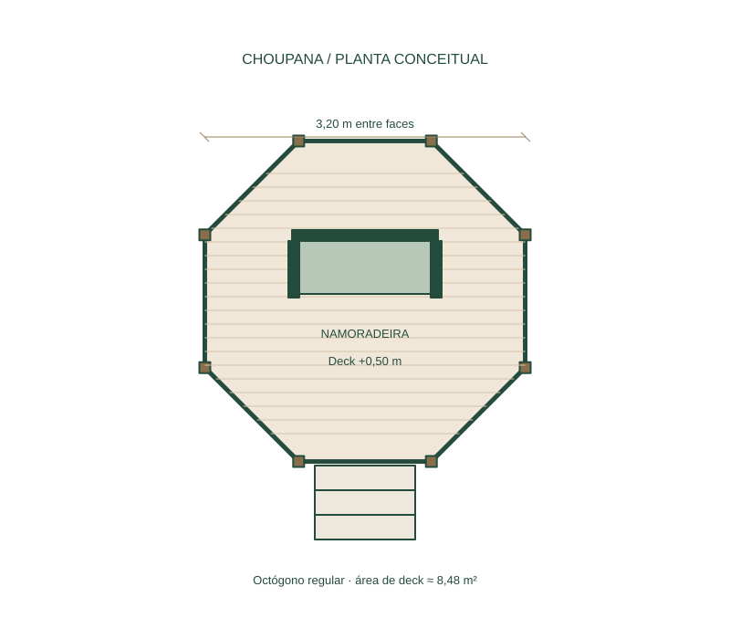
Pausa na paisagem
Estrutura aberta em madeira, oito apoios e cobertura de oito águas com acabamento natural. A elevação destaca a plataforma e permite implantação sensível à topografia. Guarda-corpos, fundações e acesso serão definidos no projeto técnico.
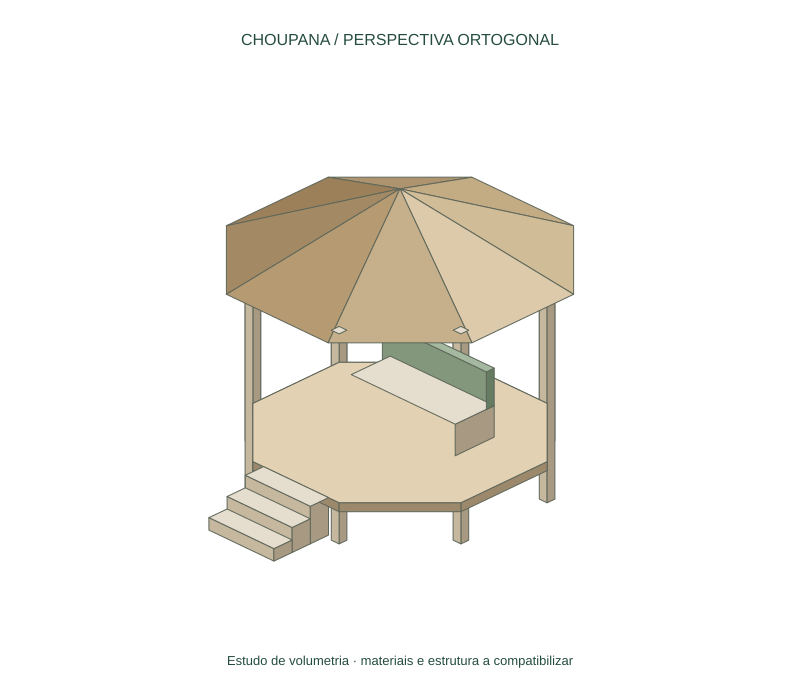
Do conceito ao projeto.
Esta apresentação consolida referências para alinhamento com o cliente. A próxima etapa é compatibilizar o programa com a topografia, a vegetação, os acessos e as dimensões executáveis.
Conferência do terreno
Validar limites, cotas, faixa de preservação, drenagem, área de intervenção e viabilidade das lâminas d’água.
Base técnicaPlanta do chalé
Compatibilizar as dimensões propostas do chalé com ventilação, instalações, circulação e implantação.
Compatibilização técnicaPlanta da choupana
Validar o módulo octogonal proposto, os apoios, a proteção perimetral, a rota acessível e os detalhes construtivos.
Compatibilização técnica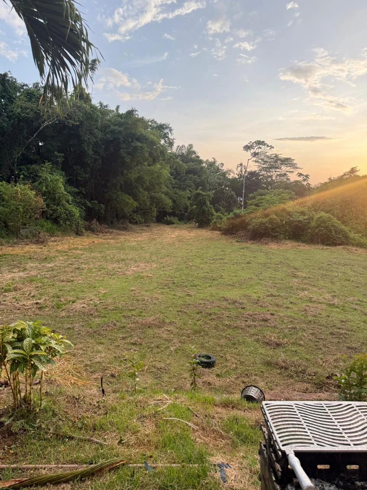
S.O.S. Casais
“Uma proposta para acolher histórias, fortalecer vínculos e vivenciar a natureza.”